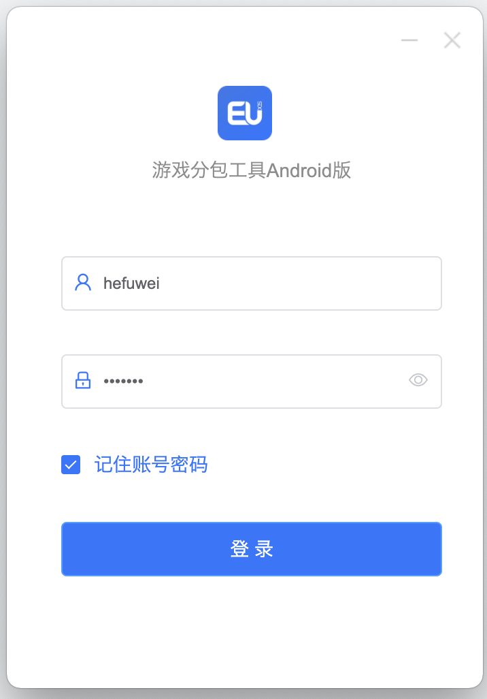
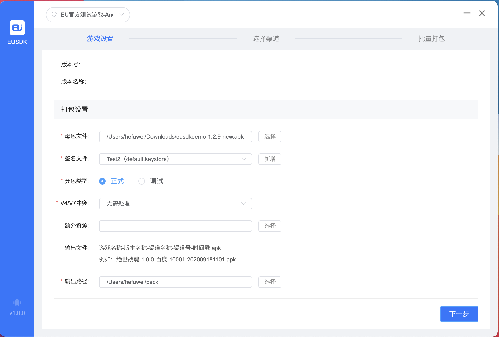
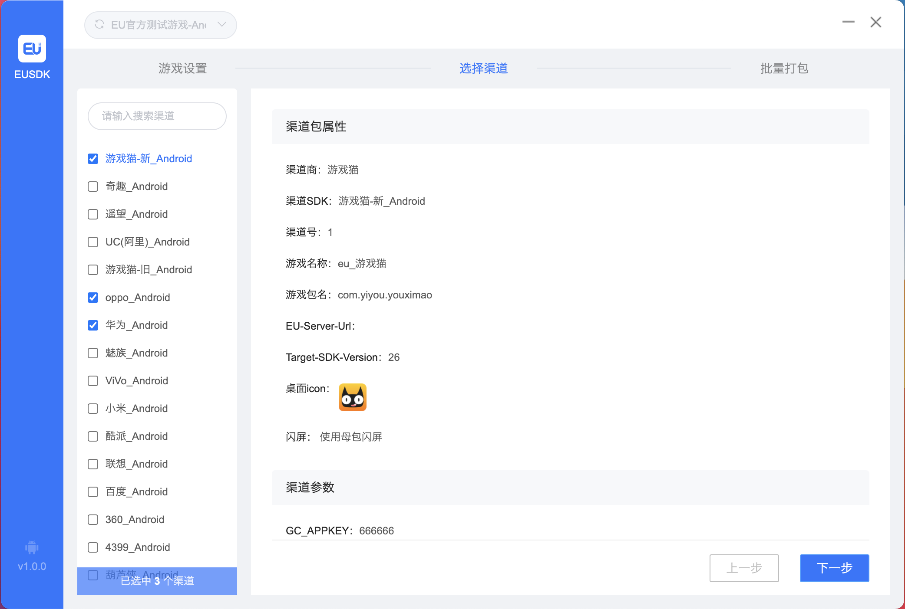
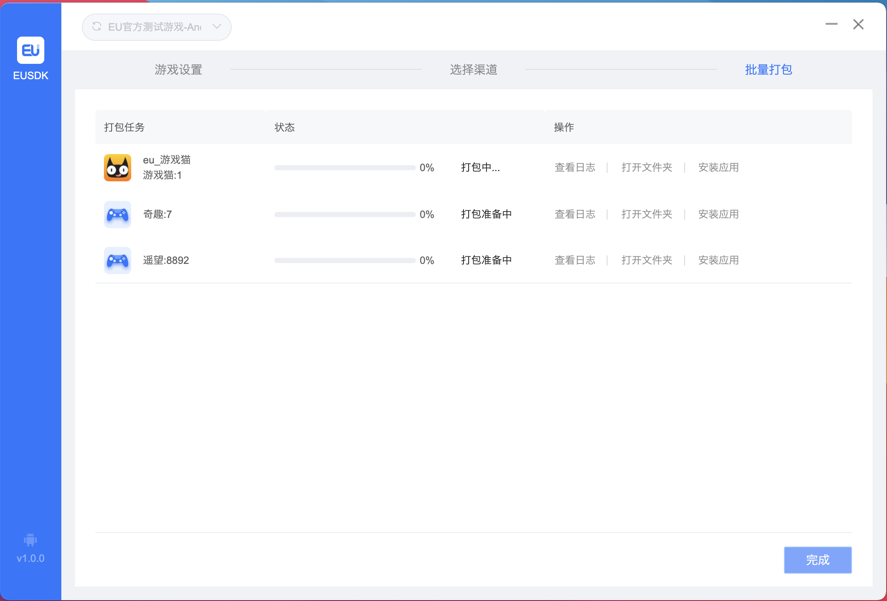

前言
目前在线打包系统虽然能够满足渠道分包需求，但是还存在很多问题，比如操作复杂度高、游戏渠道关联和渠道信息配置入口不统一、母包需要上传打包机器打完后还要下载（包体积上 G）、多个用户公用一个打包机器，基于上述原因开发了一款桌面打包工具。
技术选型
由于我们开发者使用的是 Mac 电脑，而用户（运营或者游戏提供商）使用的是 Windows 电脑，因此两个平台都需要兼顾到，最初考虑是 Windows 版本使用 Java Swing 进行开发，Mac 版本使用原生进行开发，但是这样势必要写两份代码，那么有没有一份代码就可以同时在两个平台上运行的方法呢？通过查阅资料发现 Electron 可以满足这个要求，其使用前端技术（Vue、React）进行开发，一份代码可以同时编译出 dmg 以及 exe，同时 VisualStudioCode 也是使用该技术进行开发的，最终就选定使用该方案，由前端同事负责页面绘制，我负责逻辑处理。
界面展示
大体上主要分为登录、游戏配置、渠道配置、打包四个界面。
登录界面
游戏配置界面
渠道配置界面
打包界面

基本原理
整体架构图如下：

整体时序图如下：

打包原理
JS 层主要完成资源准备，比如下载闪屏图、渠道插件 SDK 资源等，以及结果处理，Python 脚本在打包过程中会适时的写文件更新进度，JS 只需开启一个定时器一直读取进度即可，等到脚本只需完成，判断下进度是否为 100，即可判断打包是否成功。这里只关注下打包流程。
打包流程如下（参考 U8 SDK）：
使用 apktool2 反编译母包，存放目录为 decompile 。
将 decompile/smali_classesN 文件夹下所有文件拷贝到 decompile/smali 文件夹下并删除对应文件夹。
注：N 从 2 开始，反编译后第一个 dex 生成的 smali 文件会放到 /smali 文件夹下，第二个放到 /smali_classes2 下，以此类推，这步用于合并所有 smali 文件，后续会进行拆分。
重命名包名。
注：根据配置将 AndroidManifest.xml 中 manifest 节点下 package 值改为指定的值。
添加调试。
注：根据配置将 AndroidManifest.xml 中 application 节点下 android: debuggable 改为指定的值。
处理渠道 SDK 资源。
拷贝 SDK 资源到临时目录 sdkTemp。
处理 SDK 资源目录下所有的 aar 文件，全部合并到 sdkTemp。注：渠道资源优先级小于母包。
解压 aar 文件。
合并 AndroidManifest.xml 文件。
合并 assets 文件夹。
合并 libs 文件夹。
合并 jni 文件夹。
合并 res 文件夹。
- 对于 values （values-xxx）以外的文件夹，直接简单的拷贝替换即可。
- 对于 values（values-xxx）文件夹，则需要读取目录下所有文件内容。去重后将其整合为一个values.xml 文件，同时需要考虑到 declare-styleable 元素不能简单的去重，而要对其内部含有 format 属性的 attr 元素进行合并。
拷贝 classes.jar 到 sdkTemp/libs 下，需要加上前缀。注：生成 aar 时会将内部代码打成 classes.jar。
标记是否需要生成该库的 R 文件。
解压 sdkTemp/libs 目录下所有的 jar 包，将解压后 jar 包中的 assets 文件夹与 sdkTemp/assets 合并。注：jar 包中也可能会有 assets，所以需要解析进行合并。
使用 d8 将 sdkTemp/libs 以及 sdkTemp/下所有的 jar 包编译成 classes.dex 文件。注：可能还会有 classes2.dex 等。
使用 baksmali 将上一步生成的 dex 文件编译成 smali 文件夹，并将其拷贝到 decompile/smali 目录下。
将 sdkTemp/SDKManifest.xml 与 decompile/AndroidManifest.xml 进行合并。
将 sdkTemp/libs 下所有文件（除 jar、aar，因为已被转换为 smali 拷贝过去了）与 decompile/libs 进行合并。
将 sdkTemp/assets 下所有文件与 decompile/assets 进行合并。
处理插件 SDK 资源。流程与渠道 SDK 一致，就不展开了。
拷贝额外的资源到 decompile 目录下，这可用于替换母包资源。
写入配置信息，部分写入 assets/config.properties 另一部分以 meta-data 的形式写入清单文件。
将渠道以及插件的配置文件拷贝到指定位置。注：少部分渠道将配置参数以文件的形式保存到 assets 目录。
添加闪屏界面，使用用户配置的闪屏图片。注：由于本来就自带启动 Activity，因此需要解析清单文件将启动 Activity 更改为 SplashActivity （其以 smali 文件形式存放在脚本目录下）。
修改桌面图标，使用用户配置的桌面图标。注：生成不同分辨率的图片放入不同目录，文件名统一为 eu_app_icon.png ，接着修改清单文件找到 android:icon 将其修改为 @drawable/eu_app_icon 即可。
检查本地库 so 文件夹，将不需要的删除，只保留 decompile/libs/armeabi 以及 decompile/libs/armeabi-v7a，以缩减包体积。 注：需要保证两者拥有的 so 一致。
修改游戏名称，直接将清单文件中的 @string/app_name 替换为指定名称即可。
将渠道资源以及所有的插件资源与母包进行合并，合并方式与 aar 资源合并到渠道资源中一致。
执行插件以及渠道的自定义脚本，提供一个 hook 点，渠道/插件可以做一些自定义的操作。
读取清单文件将所有需要动态申请的权限过滤出来保存到文件中，当 App 启动后会自动进行申请。
使用 aapt2 编译 decompile/res 文件夹生成 res_flat.zip 文件，然后结合清单文件进行链接生成 res.apk 以及 R.java 文件。注：res.apk 中只包含 res 文件夹、resources.arsc 以及 AndroidManifest.xml 文件。
使用 javac 编译上一步生成的 R.java 文件，接着使用 d8 将其编译成 dex，最后再使用 baksmali 将其再转换为 smali 并保存到 decompile/smali 目录下。
处理额外的 R 文件，渠道 SDK 或者插件 SDK 可能内部使用了 R.xxx.xxx 前去引用资源，而由于资源进行了重新整合，会导致其引用不到，因此需要拷贝一份 R 文件放到目标包下并将其包名改为渠道或者插件的包名参考网址。
将 decompile/smali 文件夹进行拆分，为多个 dex 做准备，具体拆分流程为遍历所有的 smali 文件，获取该文件所包含的方法数，如果累计值是否超过临界值，那么剪切到下个目录 smali_classes2，重置累计值继续遍历没有没超过临界值那么继续剪切到 smali_classes2 如果又超过临界值，那么再剪切到下个目录 smali_classes3 以此类推。注：临界值为 60K ，具体根据 smali 文件计算方法数参考网址。
使用 apktool2 进行回编译，生成 output.apk。
如果配置 v1 签名，使用 jarsigner 对其进行签名然后使用 zipalign 对其进行对齐即打包完成，如果配置 v2 签名，先使用 zipalign 对其进行对其，然后使用 apksigner（v2 签名） 对其进行签名即打包完成。